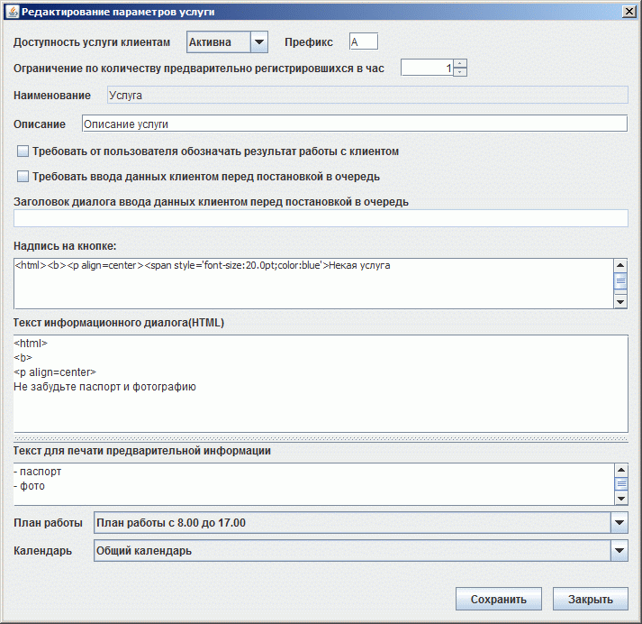
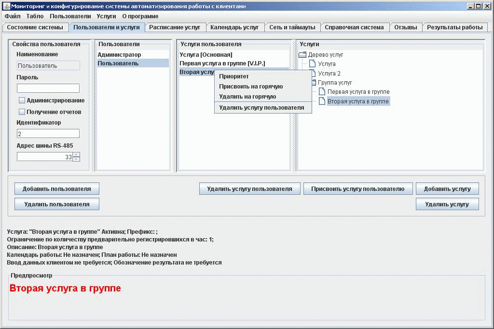
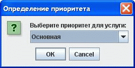
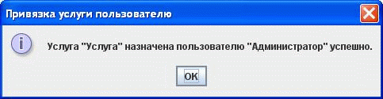
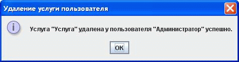

Формирование конфигурации
На закладке "Пользователи и услуги" администратор может создавать, удалять, редактировать пользователей и услуги.
Формирование списка пользователей
Чтобы добавить пользователя надо нажать на кнопку "Добавить пользователя". В открывшемся диалоге ввести его имя(уникально в системе) в соответствующее поле, ввести идентификатор ( в большинстве случаев - это окно пользователя, за которым он обслуживает клиентов ) и ввести адрес табло, на которое будет подана информация, в случае вызова клиента.
Чтобы удалить пользователя, нужно выбрать пользователя из первой колонки и нажать кнопку "Удалить пользователя".
Каждому пользователю необходимо заполнить набор параметров:
Формирование дерева услуг.
Формирование дерева услуг производится в третьей колонке.
Группа логически объединенные услуги.
Чтобы добавить услугу в группу, необходимо выбрать группу и нажать на кнопку "Добавить услугу", ввести в текстовое поле наименование услуги и услуга добавится в группу.
Чтобы добавить группу, необходимо выбрать услугу, которая станет кгуппой, и нажать кнопку "Добавить услугу"", ввести в текстовое поле наименование услуги и то, что было услугой, станет группой, а услуга, наименование которой было введено, будет помещено в группу в качестве новой услуги.
Каждой услуге или группе необходимо заполнить набор параметров в диалоге редактирования услуг:

Операции над услугами и группами.
Чтобы удалить услугу или группу, выберите услугу или группу из правой колонки и нажмите на кнопку "Удалить услугу".
Чтобы удалить услугу из списка услуг, которую обслуживает пользователь, необходимо выбрать пользователя, услугу, которую надо удалить и нажать кнопку "Удалить услугу пользователя.
Чтобы сделать услугу неактивной, достаточно выбрать ее из списка услуг и перевести с "Активна" в "Неактивна".
Префикс необходим для формирования номера пользователя, например, если клиент пришел первым и записался к услуге с префиксом "А", то он получит номер "А 1".
ВАЖНО: Для того, чтобы сопоставить услугам текст, отображаемый на соответствующей кнопке на пункте регистрации, необходимо выбрать услугу в правой колонке и в текстовом поле "Надпись на кнопке" ввести наименование услуги в формате HTML. В этом случае на пункте регистрации будет отображаться красивый текст кнопки.
Присвоение услуг пользователям
Чтобы присвоить услугу или группу услуг пользователю, достаточно выбрать пользователя и услугу или группу и нажать кнопку "Присвоить услугу пользователю".
Примечание: пользователь сможет обрабатывать услугу только после того, как будет сохранена конфигурация и будет перезагружена вся система.
Нажав правой кнопкой на второй колонке, появится контекстное меню:

Чтобы добавить услугу пользователю, нужно выполнить следующие действия:
1) Выбрать услугу из дерева услуг и присвоить ее пользователю.
2) Выбрать только что присвоенную услугу, нажать правой кнопкой мыши по услуге и выбрать пункт "Приоритет".
3) Система попросит Вас выбрать приоритет для услуги:

4) Выбранный приоритет будет помещен в квадратные скобки рядом с наименованием услуги.
По умолчанию все услуги, добавленные в обслуживание пользователю имеют приоритет "Основной".
Чтобы добавить услугу пользователю без перезагрузки системы, то есть, не останавливая работы, необходимо:
1) Выбрать услугу из дерева услуг и присвоить ее пользователю.
2) Выбрать только что присвоенную услугу у пользователя, которому хотим присвоить услугу, нажать правой кнопкой мыши по услуге и выбрать пункт "Присовить на горячую".
3) В случае удачного завершения операции, на экран выведится сообщение:

Примечание: Пользователь будет обрабатывать эту услугу до того момента, как будет перезагружена система.
Чтобы удалить услугу на горячую, нужно:
1) Выбрать пользователя и услугу, которую он обрабатывает на горячую.
2) Нажать правой кнопкой мыши по услуге и выбрать пункт "Удалить на горячую"
3) В случае удачного завершения операции на экран будет выведено сообщение:

Чтобы удалить услугу пользователя, нужно:
1) Выбрать пользователя и услугу, которую он обрабатывает.
2) Нажать правой кнопкой мыши по услуге и выбрать пункт "Удалить услугу пользователя"
3) Будет выполнен повторный запрос на удаление: